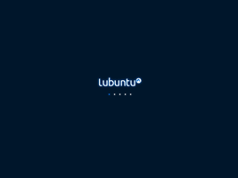
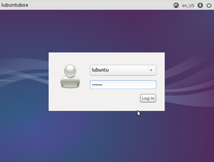
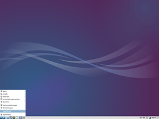
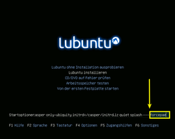
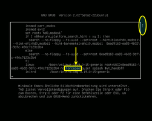

Lubuntu
 Lubuntu
Lubuntu  ist eine offizielle Variante von Ubuntu mit der Desktopumgebung LXDE und einem eigenen Lubuntu Software Center. Das Hauptaugenmerk der Entwickler richtet sich auf Schnelligkeit und Energieeffizienz, wodurch Lubuntu verhältnismäßig niedrige Anforderungen an die Hardware stellt. Damit eignet es sich insbesondere, aber nicht ausschließlich, auch für ältere oder leistungsschwächere Geräte oder solche, die auf eine lange Akkulaufzeit angewiesen sind.
ist eine offizielle Variante von Ubuntu mit der Desktopumgebung LXDE und einem eigenen Lubuntu Software Center. Das Hauptaugenmerk der Entwickler richtet sich auf Schnelligkeit und Energieeffizienz, wodurch Lubuntu verhältnismäßig niedrige Anforderungen an die Hardware stellt. Damit eignet es sich insbesondere, aber nicht ausschließlich, auch für ältere oder leistungsschwächere Geräte oder solche, die auf eine lange Akkulaufzeit angewiesen sind.
Oder anders ausgedrückt: nicht nur Fortgeschrittene wissen das eher unauffällige LXDE zu schätzen, da hier die jeweils eingesetzten Anwendungen (wieder) die zentrale Rolle für den Benutzer spielen – und nicht das Bling-Bling einer Desktop-Umgebung.
Mit 14.04 erschien erstmals eine Long-Term-Support-(LTS)-Version von Lubuntu, die also drei Jahre lang (bis April 2017) Aktualisierungen („Updates“) und Unterstützung durch die Entwickler erhielt. 16.04 war die nächste LTS-Version und ist die aktuelle.
Geschichte¶
Im März 2009 wurde das Projekt von Mario Behling auf Launchpad gestartet. Wie alle Ubuntu-Varianten ist es ein Community-Projekt. Im August 2009 ist erstmals eine Live-CD angeboten worden, jedoch noch ohne die Möglichkeit einer Installation. Seit April 2010 bzw. Ubuntu 10.04 sind eigene inoffizielle Installations-CDs zur Verfügung gestellt worden, nachdem der offizielle Status als LTS-Version (vorerst) abgelehnt worden war. Seit Ubuntu 11.10 ist Lubuntu eine offizielle Variante von Ubuntu.
|  |
| 14.04 - Startvorgang |
|  |
| 14.04 - Grafische Anmeldung |
|  |
| 14.04 - Desktop |
Weitere Bilder gibt es in der Ubuntu-Bildergalerie und im Artikel Lubuntu/Bilder.
Hardwareanforderungen¶
Obwohl es mit Enlightenment eine Desktop-Umgebung gibt, die noch sparsamer ist, zählt das in Lubuntu eingesetzte LXDE mit Openbox als Fenstermanager zu den Leichtgewichten, was die Hardwareanforderungen betrifft. Eine nüchterne, aber einfach zu bedienende Oberfläche und der bewusste Verzicht auf grafische Spielereien sprechen insbesondere Anwender an, die ihren Rechner zum Arbeiten mit ihren Lieblingsprogrammen brauchen und nicht daran interessiert sind, dass sich die Beschäftigung mit der Desktop-Umgebung in den Vordergrund drängt.
Die tatsächlichen Anforderungen an die Hardware sind sehr abhängig von den individuellen Anwendungsfällen des Benutzers. Die hier beschriebenen Mindestanforderungen orientieren sich deswegen ausschließlich an der Software-Zusammenstellung, die Lubuntu standardmäßig mitbringt. Es werden dabei die gängigsten Anwendungsfälle Büroarbeit und Surfen im Internet betrachtet. Theoretisch können die Anforderungen noch unterboten werden, wenn man bei den Anwendungsprogrammen nachträglich noch eine leistungsorientierte Auswahl trifft.
Arbeitsspeicher: mindestens 512 MiB. 1024 MiB RAM werden für flüssiges Arbeiten empfohlen
Prozessor: mindestens Pentium 4, Pentium M oder AMD K8 (siehe Processor
im Ubuntu-Wiki)Grafikkarte: prinzipiell egal, aber es gibt auch problematische Karten (siehe Problembehebung)
Festplattenspeicher: mindestens 4 GiB (ohne Benutzerdaten). In der Praxis ist eher das doppelte oder mehr angebracht.
Programme¶
Lubuntu ergänzt die Desktop-Umgebung LXDE mit einer Reihe vorinstallierter Anwendungen aus den offiziellen Paketquellen (siehe auch Standardanwendungen und Lubuntu Applications). Nachfolgend eine kurze Liste zur Orientierung:
| Standardanwendungen von Lubuntu | ||
| Bereich | Anwendung | Programm |
Büro | Textverarbeitung | Abiword |
| Dokumentenbetrachter | Evince | |
| Personal Information Manager und Kalender | Osmo | |
| Tabellenkalkulation | Gnumeric | |
| Notizen | Xpad | |
Grafik | Bildbearbeitung | mtPaint |
| Bildbetrachter | GPicview | |
| Scanprogramm | Simple Scan | |
Internet | ||
| Webbrowser | Firefox | |
| Instant Messenger | Pidgin | |
| IRC Client | XChat | |
| Sylpheed | ||
| BitTorrent Programm | Transmission | |
Multimedia | Audioplayer | Audacious |
| Videoplayer | GNOME MPlayer | |
| Webcam | guvcview | |
System | Systeminformationen | HardInfo |
| Netzwerkmanager | NetworkManager | |
| Paketverwaltung | Lubuntu Software Center | |
Zubehör | Dateisuche | Catfish |
| Archivmanager | File Roller | |
| Taschenrechner | Galculator | |
| Editor | Leafpad | |
| Dateimanager | PCManFM | |
| Terminalemulator | LXTerminal | |
| Brennprogramm | Xfburn | |
Diese Programme können jederzeit ersetzt oder durch weitere, nachinstallierte ergänzt werden.
Sonstiges¶
Alternate CD¶
Hierbei handelt es sich um ein spezielles Installationsmedium für Rechner mit 512 MiB RAM oder weniger. Da der grafische Installationsassistent Ubiquity inzwischen deutlich mehr Arbeitsspeicher benötigt, erfolgt die Installation im sparsamen Textmodus. Einzelheiten sind im Artikel Alternate Installation zu finden. Angemerkt sei, dass diese Installationsmöglichkeit nicht zwangsläufig zu einem im Alltag benutzbaren System führt. Echte Abhilfe schafft nur der Einbau von mehr Arbeitsspeicher.
PulseAudio¶
Lubuntu ist das einzige Ubuntu-Derivat, das bis 16.04 bewusst auf den Soundserver PulseAudio (PA) verzichtet. Stattdessen wird (nur) ALSA als Grundlage für das Soundsystem verwendet, womit der normale Funktionsumfang einer Soundkarte genutzt werden kann. Für einzelne Programme, die PA zwingend voraussetzen (z.B. Skype ab Version 4.3), muss man PA nachinstallieren.
Ab 16.10 ist PulseAudio standardmäßig vorinstalliert.
X2Go-Kompatibilität¶
X2Go ist ein Programm, mit dem man einen (oder mehrere) entfernte Rechner bequem im lokalen Netzwerk (LAN) oder über das Internet nutzen kann. So lassen sich beispielsweise rechenintensive Anwendungen auf entsprechend ausgerüstete Systeme verlagern und der eigene, nicht so leistungsstarke Rechner dient nur noch zur Anzeige der Ergebnisse. Lubuntu gehört zu den offiziellen Ubuntu-Varianten, mit denen X2Go perfekt kombiniert werden kann.
zRam¶
Bis einschließlich Lubuntu 14.04 ist zRam automatisch vorinstalliert. Hierbei handelt es sich um eine Technik, um knappen Arbeitsspeicher zu Lasten der Prozessornutzung auszugleichen. Da es aber zu einem Einfrieren des Systems führen kann, wird es seit Lubuntu 14.10 nur im Live-Modus verwendet und nicht mehr automatisch installiert.
Problembehebung¶
Lubuntu 14.04¶
In diesem Abschnitt werden einige der bekanntesten und häufig auftretenden Probleme bei Lubuntu 14.04 beschrieben und mögliche Lösungsansätze vorgestellt. Wegen mehrerer gravierender Fehler (Autostart-Probleme: kein Netzwerk-Manager, keine Aktualisierungsbenachrichtigung etc.) wird empfohlen, statt 14.04 die fehlerbereinigte Version 14.04.1  zur Installation zu nutzen. Auch 14.04.2 oder neuere Versionen sind möglich, enthalten aber aufgrund des integrierten LTS Enablement Stacks einen neueren Kernel, der nur zeitlich begrenzt unterstützt wird und im Gegensatz zum Kernel 3.13 spätere Aktualisierungen erfordert.
zur Installation zu nutzen. Auch 14.04.2 oder neuere Versionen sind möglich, enthalten aber aufgrund des integrierten LTS Enablement Stacks einen neueren Kernel, der nur zeitlich begrenzt unterstützt wird und im Gegensatz zum Kernel 3.13 spätere Aktualisierungen erfordert.
PAE¶
Ältere 32-bit-Computer (meist Notebooks), deren Prozessoren die vom Ubuntu-Kernel benötigte Physical Address Extension (PAE) zwar besitzen, aber deren Vorhandensein verschweigen, benötigen ab 14.04 die zusätzliche Bootoption forcepae, damit Lubuntu startet. Dies gilt sowohl für das Live-System bzw. zur Installation als auch im installierten System.
Sollte es nach der Installation des Betriebssystems bei der Aktualisierung des Kernels zu Fehlermeldungen kommen, dann wurde diese Bootoption möglicherweise während der Installation nicht korrekt in die Konfiguration des Bootmanagers GRUB 2 übernommen und muss einmalig manuell in der Datei /etc/default/grub nachgetragen werden.
GRUB_CMDLINE_LINUX="forcepae"
Anschließend wie bei GRUB 2 üblich die Konfiguration aktualisieren.
|  |
| Bootoptionen (Lubuntu 15.04) |
|  |
| Bootoptionen bearbeiten |
Siehe auch BootOptions/before--after .
Firefox¶
Seit Lubuntu 13.10 ist Firefox der Standard-Webbrowser und verbraucht verhältnismäßig viel Arbeitsspeicher. Die Verwendung eines anderen Webbrowsers kann bei wenig Arbeitsspeicher die Arbeit mit dem System angenehmer gestalten. Der ehemalige Standard-Browser Chromium (die Basis für Google Chrome) ist allerdings keine Alternative. Die Ansprüche an die Hardware sind inzwischen ähnlich hoch wie bei Firefox. Beispiele für Programme mit geringerem Ressourcenbedarf sind Midori und QupZilla.
Papierkorb¶
Ab Ubuntu 14.04 ist es erstmals möglich, das Symbol für den Papierkorb auf Wunsch auf dem Desktop anzeigen zu lassen. Leider fehlt dem Symbol die gewohnte Funktion, den Papierkorb über das Kontextmenü  zu leeren. Wie man das behebt, ist im Artikel PCMan File Manager/Benutzerdefinierte Aktionen beschrieben.
zu leeren. Wie man das behebt, ist im Artikel PCMan File Manager/Benutzerdefinierte Aktionen beschrieben.
Ordnermenü¶
Die Panel-Erweiterung für das Ordnermenü funktioniert in der Lubuntu-Sitzung derzeit nicht und öffnet einen ausgewählten Ordner weder in der Paketverwaltung noch in einem Terminal. Eine Lösung ist sowohl im Fehlerbericht 1325420 und auch in einem Forumartikel angegeben.
Adobe Flash¶
Mit dem AMD K7 und anderen älteren Prozessoren ohne SSE2 kann Adobe Flash nicht mehr verwendet werden. Lubuntu selbst müsste theoretisch noch möglich sein.
Abiword¶
Abiword ist nach dem Wechsel der Grafikbibliothek GTK von Version 2 auf 3 sehr träge und kann auf älteren Geräten praktisch nicht mehr eingesetzt werden. Sofern die Hardwareanforderungen für Lubuntu erfüllt sind, ist alternativ die Verwendung von LibreOffice Writer zur Textverarbeitung durchaus möglich. Als sparsame Alternativen kommen außerdem Editoren wie FocusWriter oder Ted, die im Rich-Text-Format (RTF) speichern können, in Frage.
Eine relativ anspruchsvolle Möglichkeit, Abiword weiter mit GTK 2 zu nutzen, wird im Artikel Abiword/Kompilieren beschrieben.
Links¶
LXDE - Die Desktop-Umgebung von Lubuntu
Alte Hardware - Informationen zur Weiternutzung alter Computer
Lubuntu.net
- Offizielle Projektseite von LubuntuLubuntu - Advanced Methods
- Artikel im Ubuntu-Wiki mit weiteren Hinweisen zu Lubuntu auf alter Hardware
- Erstellt mit Inyoka
-
 2004 – 2017 ubuntuusers.de • Einige Rechte vorbehalten
2004 – 2017 ubuntuusers.de • Einige Rechte vorbehalten
Lizenz • Kontakt • Datenschutz • Impressum • Serverstatus -
Serverhousing gespendet von